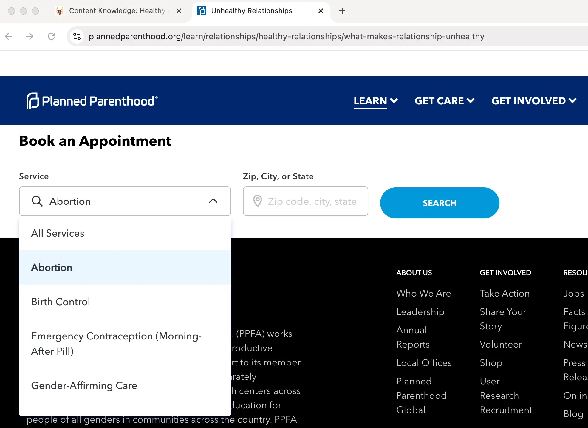

Vote
Ed Brey for
Sheboygan Falls
School Board
Ed will bring focus to Sheboygan Falls schools:
- Focus spending on academics
- Pay teachers based on merit
- Teach America’s heritage
- Ensure parent rights
- Keep politics out of schools
About Us
Academic focus in Sheboygan Falls schools
Falls Forward highlights opportunities for schools in Sheboygan Falls, Wisconsin, to better focus on teaching the skills, character, and wisdom students need to build strong families and careers.
We are dedicated to fostering a school environment that prioritizes educational excellence, fiscal responsibility, and student safety. We advocate for policies to hire and retain the best educators, empower parents, promote transparency, and teach America’s heritage to its next generation of citizens. Our goal is a community where education is the focus.
To that end, our immediate focus is the election on April 1.
Learn where the candidates standPlanned Partners

Sheboygan Falls School District stats
English: 36.8%
Math: 41.6%
Percent of students who met proficiency standards
$16,584 per student
Annual spending by the school district
$19,141 per household
Average charge to families for the proposed $99.8 million referendum
+7.21%
Average teacher compensation compared to the state average
Issues
We love our schools and the difference our teachers and staff make in our community’s students’ lives. With a stronger focus on academics, we believe much more is possible, with test scores reflecting students’ deeper knowledge.
Spend wisely, focusing on academics
School spending should better prioritize academics. The incumbents running for reelection tried last year to charge taxpayers more than $99 million, which averages over $19,000 per household. The new spending would largely have gone to subsidize daycare, placing a burden on families while benefiting academically few children in the program.
The referendum also included expensive rework of existing facilities for only modest gains. It called for re-laying out locker rooms, fields, and building access, and redoing rather than renovating the tech wing. We should focus on K-12 academic needs, such as modernizing our science and technology areas.


2024-2025 professional staff salaries
Pay teachers based on merit
The incumbents eliminated merit pay in 2023. Our seniority system fails to attract and retain the best teachers, and we lose out to districts that have modernized. We should restore and expand the former merit pay system to reward our best performing educators at wages fair to teachers and taxpayers.
For example, despite paying teachers 7% above the state average, we haven’t been able to recruit a qualified teacher for modern computer science courses. Instead, we offer only an online class that uses technology that was abandoned in industry over a decade ago. Seniority pay takes away the flexibility schools need to ensure our educators have the skills needed to give our students a pathway to the many rewarding, in-demand careers of the digital age.
- When researchers at Yale compared pre-Act-10 seniority pay plans vs. post-Act-10 flexible-pay plans, they found that the teachers who left flexible-pay districts tended to be those who were far less effective, and the ones who remained increased their effort.
- The Wisconsin Teachers Union, WEAC, acknowledges that basing pay only on credits and years of teaching is outdated and should be modernized by linking pay to the areas proven to impact and improve student learning and teaching performance.
Teach America’s heritage
The incumbents set academic standards without the previous standards’ requirements for precise language and standard English. The new standards embrace DEI, prioritize “social justice”, and include 30 instances where teachers must incorporate “power in inequitable practices” and use students’ “home languages and dialects”.
Also gone is analysis of “works of exceptional craft and thought” and foundational U.S. documents such as the Declaration of Independence. We should return to teaching about America’s heritage as a great nation from a balanced historical perspective.
- The math standards cite a radical “Equity and Diversity” paper touting “mathematx,” a political statement “in the sense of Malcolm X” about teaching math using “Indigenous knowledge” about how “our choice to destroy the planet” to serve our “capitalistic” needs “is a form of settler colonialism that perpetuates violence”, and that “plants, animals and rocks suffer the same treatment as Indigenous peoples” because “a Western worldview” does not consider “rocks as living beings”.

“Equity”-centric approach to education in the approved standards

The bottom portion of a Sheboygan Falls sex ed curriculum web page
Remove Planned Parenthood agenda from sex ed
Sex ed content should align with community values. The incumbents approved a sex ed curriculum using Planned Parenthood web pages that offer students to book an appointment for abortion or “gender-affirming care”. The curriculum pages describe Planned Parenthood affiliates as “trusted sources of health care and education for people of all genders”. Instruction on the biological binary of male and female is absent from the curriculum.
Although official district policy is to present “abstinence from sexual activity as the preferred choice of behavior for unmarried students”, the incumbents approved a video from Planned Parenthood for the sex ed curriculum showing couples making out in foreplay (mostly same sex and none wearing wedding rings).
- Each Planned Parenthood page in the curriculum also links to the Planned Parenthood Newsroom where students can explore the organization’s political stances on subjects like taxpayer funding of abortion.
Ensure sex ed content review
The incumbents blocked consideration of a resolution to end the bypass of sex ed review. Counseling material presented to all 5th graders taught there are three sexes using a “Genderbread Person”. In the high school, the Gender and Sexuality Alliance (GSA) teaches sex ed topics and glorifies trans identities, which contribute to a bandwagon effect that magnifies mental health problems in at-risk youth.
All forms of sex ed instruction should undergo community review and school board approval to ensure it is scientifically accurate, unbiased, and age appropriate.
- Alongside the Genderbread Person were links to several LGBTQ websites presenting far-left sex ed material. The Genderbread Person and links remained up until the counselor eventually left the district. The incumbents have still taken no action to prevent a future occurrence.


Stop sponsoring political activism
The district-sponsored Gender and Sexuality Alliance, which meets during school and is led by paid teachers, promotes its political viewpoints to students. It also furthers the school-to-clinic pipeline by advertising LGBTQ “affirming care” services, even while clubs like the Boy Scouts aren’t allowed to advertise.
Taxpayer-funded schools should remain neutral. The best way for our schools to foster a safe and welcoming environment that shows dignity and respect to all students is through clubs that focus on building character, not politics.
- The incumbents blocked a resolution to prevent taxpayer funding of political activism through district-sponsored clubs.
Welcome everyone, without identity politics
The incumbents blocked a resolution to prevent display of discriminatory flags. The district publicly displays the “Progress Pride” flag, which per the Wisconsin DPI represents “trans people” and “non-white individuals”. We should ensure classrooms are welcoming to everyone by keeping identity politics out of the classroom.
Several classrooms also have “Safe Zone” signs. Besides the political connection to controversies over locker rooms and pronouns, the signs are a disservice to our teachers’ continual efforts to ensure that every classroom is safe. What does labeling only some classrooms “safe” imply about the others? We should ensure signs on school property are respectful to everyone.

Signs posted in a Sheboygan Falls High School classroom
Increase academic depth
Some students learn in classrooms with walls lined with polarizing political signs. Civics education should emphasize objective data and critical thinking, not surface-level slogans. When this was reported to the incumbents, they took no action.
Improve transparency
With so much instructional material moving from textbooks to online, the community has lost visibility of what our schools are teaching. The transparency features in our online systems should be used to keep the community in and special interests out.
Teachers have surveyed our students on their preferred names and pronouns and whether that information should be concealed from their parents – all without parental notice or consent. While this practice was stopped due to Ed’s intervention, our district should adopt formal policy based on the Wisconsin Institute of Law and Liberty’s model policy to ensure parents always have the right to decide what’s best for their kids.

Falls Forward Officers
Endorsements
Falls Forward is proud to endorse Ed Brey for Sheboygan Falls School Board. Ed has worked and will work to address the issues described above and more. He is a self-employed software engineer and 18-year resident of Sheboygan Falls. He enjoys officiating high school sports, playing ultimate frisbee and volleyball, and joining his wife and children in all things backyard.
Ed has an MS in computer engineering from NTU, has a BS in electrical engineering from Marquette University, and graduated 2nd in his class from New Berlin West HS. Thankful to be an American and for the doors his education opened, he strives to prepare today’s students for their land of opportunity.
Experience:
- Past school board member (3 years)
- Managed engineering teams in large corporations (6 years)
- Small business owner (13 years)
- Leader in the PTA and Middle School Robotics (4 years)
- Volunteer for Junior Achievement and Special Olympics (15 years)
Get Involved
Vote
- At your polling place on April 1.
- Or early at your clerk’s office starting March 18.
Donate
Want to donate toward events, yard signs, literature, and other ways of informing our community?